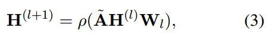

GCAN: Graph-aware Co-Attention Networks for Explainable Fake News Detection on Social Media
Abstract
本文研究社交媒体上的假新闻（fake news）检测任务。给定原始的推特短文本和对应的转推用户序列，预测推特新闻是否是假的，并且同时生成做出该判断的解释（即根据那些特征断定该推特是假的）。
本文提出Graph-aware Co-Attention networks(GCAN)来实现这个目标。
Introduction
传统的虚假新闻检测方法都是从新闻文本的文本内容中抽取特征，比如n-gram和bag of words，然后用监督式的学习方法进行二分类。
另外一些研究学习更加高级的语义学特征，比如factive/assertive verbs 和 subjectivity。 多模态的上下文信息也被研究过了，比如用户profiles和retweet propagation。
然而，现有方法的不足点：
- 已有方法都是在长文档上做的，需要文本内容较长。而社交媒体上的文本内容通常很短。
- 已有方法依赖于用户的评论，但是实际中用户的评论数据很少。
- 依赖转发树的结构，但是实际中转发树结构难以获取。
- 现有模型无法提供可解释性。
本文试图解决社交媒体环境下的虚假新闻检测任务。只依靠原始推特的内容和用户转推序列以及用户的特征文件（user profiles）进行检测。也就是说，本文在以下三个条件下进行虚假新闻检测：（1）文本短。（2）没有用户评论信息。（3）没有社交网络的结构信息和传播网络。进一步，本模型还具备可解释性，能够指出传播虚假信息的可疑转推用户，并指出原文中关键的单词。
贡献总结
- 研究在更加实际的场景下的虚假新闻检测任务。
- 提出了GCAN模型，更好的学习用户交互（user interactions）的表示，转推传播链（retweet propagation）的表示以及他们和原文的相关关系。
- 提出了dual co-attention mechanism 可以为结果提供解释。
- 在数据集上进行了大量的实验，并于其他state-of-the-art的模型进行了对比。并且在case studies中提供了解释。
Related Work
相关工作分为了以下几个方面：
- Content-based
- User-based
- Structure-based
- Hybrid-based
Problem Statement
这里介绍一下本文的形式化表述。
$\Psi=\{s_1, s_2 ,…, S_{|\Psi|}\}$表示一组tweet，$U=\{u_1, u_2, …, u_{|U|}\}$表示用户集合，每个$s_i\in \Psi$表示一个短文本tweet，$s_i=\{q_1^i, q_2^i, q_{l_i}^i\}$表示短文档$s_i$的$l_i$个单词，$l_i$是该文档包含的单词数。每个用户$u_j\in U$都有对应的特征向量 $\mathbf{x}_ j \in \mathbb{R}^{d}$，表示每个用户的特征为$d$维。对于一个推特$s_i$来说，所有转发该推特的用户构成了一个传播路径（propagation path）。给定一个推特$s_i$，其传播路径表示为$R_i=\{…,(u_j, \mathbf{x}_ j, t_ j), …\}$，其中$(u_j, \mathbf{x}_ j, t_j)$表示用户$u_j$（其对应的特征为$\mathbf{x}_ j$），$j=1,2,…,K (K=|R_i|)$，$t_ j$表示用户转发该推特的序号，例如第一个发布该推特的用户为$t_1$，后续用户$u_j$在时刻$t_j$转推了该推特。我们将转发了推特$s_i$的用户集合记为$U_i$。每个推特带有一个标签$y_i\in \{0, 1\}$表示该推特是否是真实的。
因此，该问题建模为一个二分类问题。
简而言之，本文的任务可以表述为：
给定原始推文$s_i$，推文的传播路径$R_i$，以及传播路径上用户的特征向量$\mathbf{x}_ j$，预测原始推文$s_i$是否是虚假新闻（二分类问题）。另外，模型需要能够指出其判断依据，指出传播路径上的一些用户，以及源文本中一些单词。
4 The Proposed GCAN Model
本文提出的GCAN模型由五部分构成：
- user characteristics extraction
- new story encoding
- user propagation representation
- dual co-attention mechanisms
- making prediction
模型整体框架图
4.1 User Characteristics Extraction
这里人为定义了10个用户的特征：
- 用户自我描述中的单词数。
- 用户的screen name的单词数。
- 用户$u_j$的粉丝数。
- 用户$u_j$的关注数。
- 用户$u_j$发表的文章数。
- 距离用户$u_j$发表第一篇文章到现在经过的时间。
- 用户$u_j$是否是认证的（verified or not）。
- 用户$u_j$是否允许地理定位（allows the geo-spatial positioning）。
- 原始推文发表时间与用户$u_j$转发时间的间隔。
- 用户$u_j$与原始推特的传播路径长度。
根据这10个特征构成了用户特征$\mathbf{x}_ j\in \mathbb{R}^v$，其中$v$是用户特征的维数。
4.2 Source Tweet Encoding
使用一个Encoder将原始文本编码为表示。
输入使用one-hot表示。所有文本padding到相同的长度，长度设置为$m$。$\mathbf{E}=[e_1, e_2,…, e_m]\in \mathbb{R}^m$是原文档的one-hot向量表示，每个$e_m$为0或者1。词向量表记为$\mathbf{V}=[\mathbf{v}_ 1, \mathbf{v}_ 2, …, \mathbf{v}_ m]\in \mathbb{R}^{d \times m}$，其中$d$是词向量维度。词向量表示生成如下：
$W_w$是学习参数，$b_c$是偏置项。
然后使用GRU根据词向量$\mathbf{V}$学习单词序列表示。原文档的表示可以表示为：
$$
\mathbf{s}_ t = GRU(\mathbf{v}_ t), t\in \{1,…,m\}
$$
因此，原文档表示为$\mathbf{S}=[\mathbf{s^1}, \mathbf{s}^2, …, \mathbf{s}^m] \in \mathbb{R}^{d\times m}$。$d$是词向量维度，$m$是单词数。
4.3 User Propagation Representation
本文使用推特传播路径上的用户的特征作为依据来判断源推特是否是虚假的。其背后的思想是：真实的新闻的传播用户与虚假新闻的传播用户具有不同的用户特征。本文使用GRU和CNN来学习传播表示（propagation representations）。
输入是转发推特$s_i$的用户的特征序列，记为$PF(s_i)=<\mathbf{x}_ 1, \mathbf{x}_ 2, …, \mathbf{x}_ t, …, \mathbf{x}_ n>$， 其中$n$设置为固定长度。传播链长度超过n的给截断，小于n的给重复补足。
GRU-based Representation.
给定传播链上用户的特征向量序列$PF(s_i)=<…, \mathbf{x}_ t, …>$，用GRU学习传播表示如下：
$$
\mathbf{h}_ t = GRU(\mathbf{x}_ t), t\in \{1,…,n\}
$$
其中$n$是传播链的长度。
最终的传播表示（propagation embedding）为：
$$
\mathbf{h} = \frac{1}{n} \sum_{t=1}^{n} \mathbf{h}_ t
$$
CNN-based Representation.
用一个一维的卷积来学习传播特征$PF(s_i)$。
每次考虑$\lambda$个连续的用户，因此用一个$\lambda \times v$的卷积核（$v$是用户特征的维度）。
因此输出表示向量为$C\in \mathbb{R}^{d \times (t+\lambda -1)}$计算如下：
其中$W_f$是学习参数， $b_f$是偏置项。$\mathbf{X}_ {t: t+\lambda -1}$则表示从第$t$到第$t+\lambda -1$个用户的特征（也就是一个卷积核窗口内的用户）。
4.4 Graph-aware Propagation Representation
背后思想：用户之间带有某些特征的交互也许能够为虚假信息的检测提供线索。
将所有用户看作节点，构建全连接图，边的权重设置为用户之间特征的余弦相似度。然后在图上用了一个2层的GCN。

节点特征的维度设置为$g$，$\mathbf{A}$是图的邻接矩阵，$\tilde{\mathbf{A}} = \mathbf{D}^{-\frac{1}{2}} \mathbf{A} \mathbf{D}^{-\frac{1}{2}}$是对称归一化的权重矩阵（$\mathbf{D}_ {ii} = \sum_{j} \mathbf{A}_ {ij}$），$\mathbf{W}_ l\in \mathbb{R}^{d \times g}$ 是第$l$层的学习参数。$\mathbf{H}^{(0)}$被设置为$\mathbf{X}$。本文用了2层的GCN，学到的表示记为：$\mathbf{G}\in \mathbb{R}^{g\times n}$。
4.5 Dual Co-attention Mechanism
该模块是提供可解释性的关键模块。可解释性的原理其实也就是学习出注意力权重矩阵，然后看哪一部分权重较大，也就说明那一部分更大程度地促成了目前地判断结果。
本文学习了两个注意力权重，分别来观察source tweet $(\mathbf{S}=[\mathbf{s}^1, \mathbf{s}^2, …, \mathbf{s}^m])$和user propagation embeddings $(\mathbf{C}=[\mathbf{c}^1, \mathbf{c}^2, …, \mathbf{c}^{n-\lambda +1}])$之间的相互影响，以及source tweet 和 graph-aware interaction embeddings $(\mathbf{G}=[\mathbf{g}^1, \mathbf{g}^2, …, \mathbf{g}^n])$之间的相互影响。
有了source tweet 与 user propagation 和 graph-aware interaction之间的影响因子，就可以通过观察注意力权重来提供解释性。
本文的两种注意力看的有点混乱。
两种注意力分别是
- source tweet 与 graph-aware interaction users （source-interaction co-attention）（也就是$\mathbf{S}$与$\mathbf{G}$）
- source tweet 与 propagated users (source-propagation co-attention)（也就是$\mathbf{S}$与$\mathbf{C}$）
下面以source-interaction co-attention为例讲解注意力的计算过程：
首先计算一个亲和度矩阵$\mathbf{F}\in \mathbb{R}^{m \times n}$：
$$
\mathbf{F} = tanh(\mathbf{S}^T \mathbf{W}_ {sg} \mathbf{G})
$$
其中$\mathbf{W}_ {sg}$ 是 $d \times g$的矩阵，是学习参数。将亲和度矩阵$\mathbf{F}$看作一个特征，学习预测source 与 interaction 之间的注意力权重map：
其中$\mathbf{W}_ {s}\in \mathbb{R}^{k \times d}, \mathbf{W}_ {g}\in \mathbb{k \times g}$是学习参数。
这里的公式看起来比较抽象，可以这样理解：
将 Source 空间（$\mathbf{S}$）和 Interaction 空间分别用$\mathbf{W}_ s$ 和 $\mathbf{W}_ g$映射到同一个空间中，然后亲和度矩阵$\mathbf{F}$可以看作是从source空间到interaction空间的映射（因为是一个$m \times n$的矩阵，m是单词数，n是用户数），而其转置$\mathbf{F}^T$就是从interaction空间到source空间的变换。
所以第一个等式$\mathbf{H}^s$就是将source空间和interaction空间都变换到一个统一的source空间然后相加。
同理第二个等式$\mathbf{H}^g$就是将source空间和interaction空间都变换到一个统一的interaction空间然后相加。
然后就可以计算source words和interaction users之间的注意力权重：
这里$\mathbf{a}^s \in \mathbb{R}^{1 \times m}$是每个单词的注意力权重，$\mathbf{a}^{g}\in \mathbb{R}^{1 \times n}$对应每个用户的注意力权重。$\mathbf{w}_ {hs}, \mathbf{w}_ {hg}\in \mathbb{R}^{1\times k}$是学习参数。
最终，学到的注意力权重与原表示相乘，就得到了注意力之后的表示：
Source-Propagation Co-attention的计算过程类似，计算得到$\mathbf{\hat{s}}_ {2}\in \mathbb{R}^{1 \times d}$和$\mathbf{\hat{c}}\in \mathbb{R}^{1 \times d}$，分别对应source story 和 user propagation。
这里计算user propagation 与 source 之间的注意力，没有使用RNN-based方法学到的propagation表示，只用了CNN-based方法学到的propagation表示。
4.6 Make Prediction
最后就是分类了，把前面所有的表示拼接起来，输入到一个MLP中进行分类：
目标是最小化与标准答案之间的交叉熵损失：
Experiments
直接贴一下实验结果图：
这里重点看一下他的解释性
从Source Words角度解释
如图5所示，分别展示了真实新闻和虚假新闻的词云。字体越大表明注意力权重越高。
从图中可以看出，模型根据”breaking“,”strict“等单词判定虚假新闻，而根据”confirmed“和”irrelevant“等单词判定为真实新闻。
作者解释这符合人们的直觉，因为在现实中虚假新闻通常喜欢使用这种dramatic和obscure的单词（也就是我们常说的标题党），而真实新闻更注重于已确认的事实。
从Retweet Propagation角度解释
如图6所示，对注意力权重进行了可视化：
F1-F3是三个假的新闻，T1-T3是三个真的新闻。颜色越深表示注意力权重越大。横轴表示转推时序。
通过图中结果，作者得出如下分析：
结果表明，为了判断一个推特是否是假的，应该首先检验比较早传播这个消息的用户的特征。虚假新闻的用户特征方面的证据在整个传播链中可能是均匀分布的。
从Retweeter Characteristics角度解释
如图7所示，可以看出传播链中可疑用户的特点：not verified, shorter account creation time, shorter user description length and shorter graph path length to the user who posts the source tweet.
Conclusion
本文让人感觉较为新颖的点在于
- 利用推特的传播链以及传播链上的用户序列特征作为features来进行虚假推特的检测。这种做法背后的假设是，虚假消息的传播用户特点以及传播特征与真实消息不同。这种假设听起来也挺有道理的。
- 模型通过注意力权重矩阵对实验结果进行了解释，在增强模型可解释性方面是一个非常好的工作。这种对模型的解释以及分析方法值得学习与借鉴。